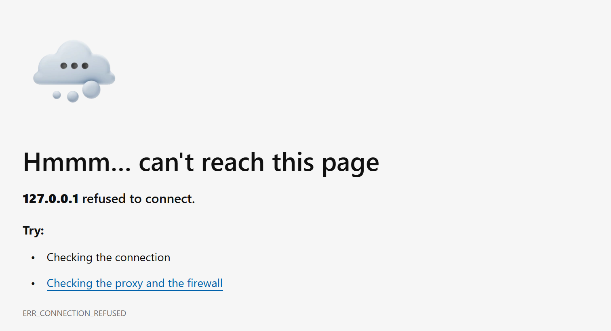
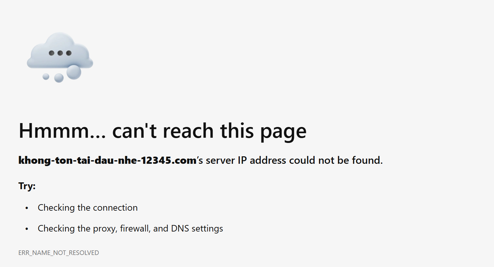
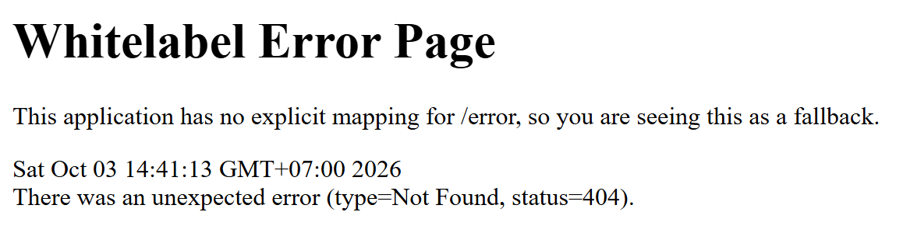
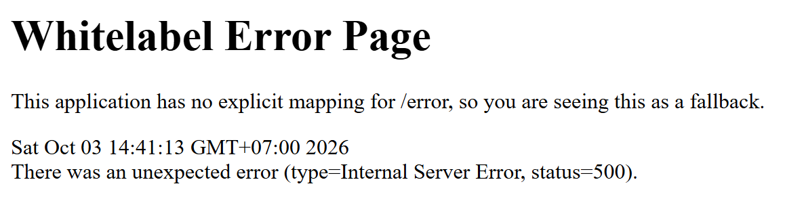
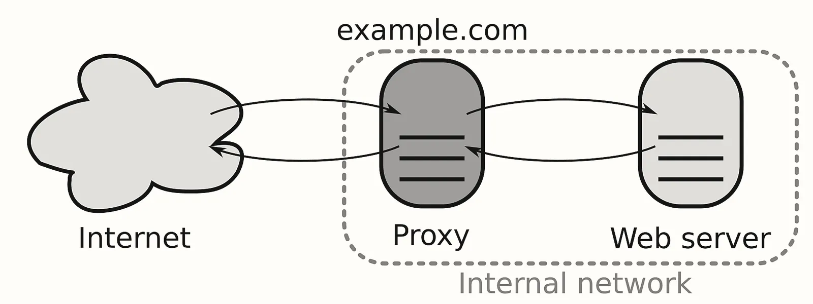
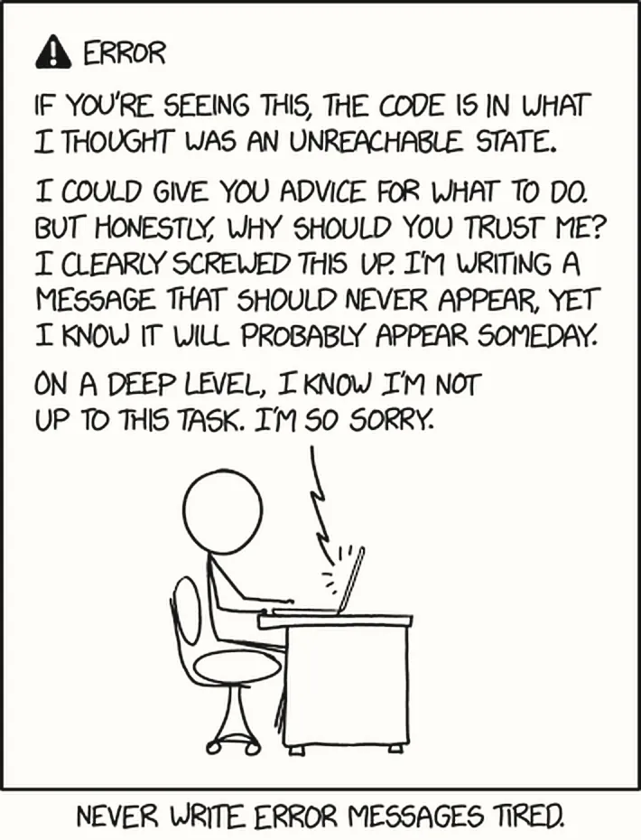
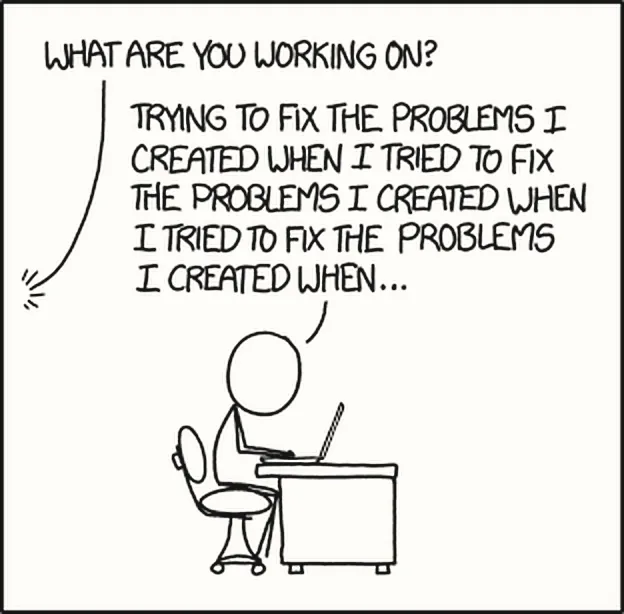
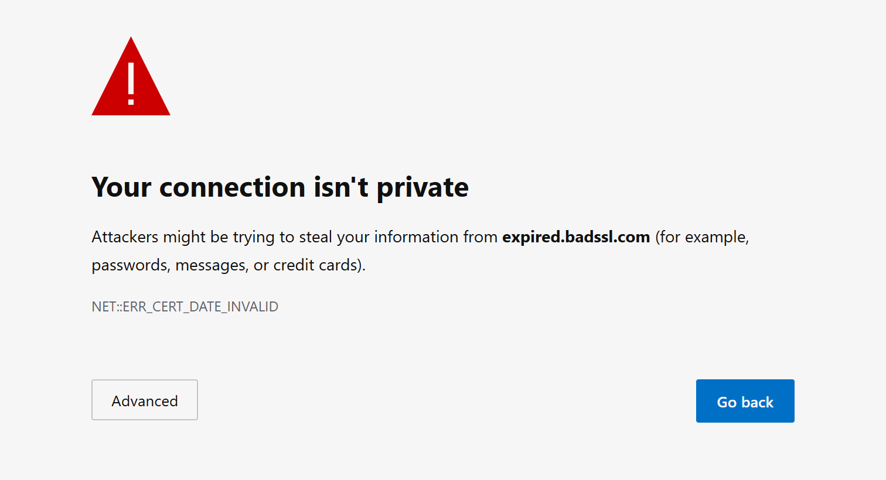

Bài 01 kết thúc ở một câu hỏi:
"Kết nối tới được rồi mà trang vẫn báo 502, 500 hay 504. Lỗi đó do ai viết ra, và nó cho biết
chặng nào đang hỏng?" Bài 01 đã chỉ ra rằng thiếu một trong ba điều kiện thì phía gọi chỉ nhận được
refused hoặc timeout, không kèm con số HTTP nào. Nhưng phần lớn sự cố người dùng
báo về lại có một con số: 502, 500, 504, 404. Những con số đó chỉ xuất hiện khi kết nối đã mở thành
công, tức vấn đề nằm xa hơn trên bản đồ.
Giả sử trong vòng mười phút nhóm hỗ trợ chuyển cho bạn ba tin nhắn, cả ba chỉ viết đúng một câu "web
lỗi rồi". Tin thứ nhất kèm ảnh chụp một trang trắng có dòng chữ lớn 502 Bad Gateway
và dòng nhỏ nginx ở cuối. Tin thứ hai kèm ảnh Whitelabel Error Page với
status=500. Tin thứ ba kèm ảnh một trang của trình duyệt có đám mây xám và dòng
ERR_CONNECTION_REFUSED.
Nhìn lướt thì rất dễ coi ba tin là cùng một sự cố rồi mở code ra đọc. Đọc kỹ thì ba ảnh chụp chỉ về ba chỗ khác nhau trên bản đồ, do ba chương trình khác nhau viết ra, và chỉ một trong ba ảnh đáng để mở code.
Đọc kỹ một thông báo lỗi là một kỹ năng học được: nhận ra ai đã viết ra nó, rồi từ đó suy ra request đã đi tới chặng nào. Bài này dựng kỹ năng đó qua bốn câu hỏi con.
Kết nối tới được rồi mà trang vẫn báo 502, 500 hay 504. Lỗi đó do ai viết ra, và nó cho biết chặng nào đang hỏng?
- Mã trạng thái HTTP nói gì, và việc nhận được một mã chứng minh điều gì?
- Ai viết ra mỗi trang lỗi, và nhận ra người viết bằng cách nào?
- 502 và 504 khác 500 thế nào, và mỗi mã chỉ về chặng nào?
- Ba nguyên tắc nào giúp khoanh vùng chặng hỏng, kể cả khi không ai đụng vào hệ thống?
Bốn tab giữa trả lời bốn câu này theo đúng thứ tự trên; tab Lab kiểm chứng các câu trả lời bằng output thật.
Cần đã học trước
Bài này dùng lại những khái niệm dưới đây mà không định nghĩa lại. Dòng nào còn mơ hồ thì quay lại đúng mục được chỉ trước khi đọc tiếp.
- Bản đồ chín chặng: nửa đường đầu, từ lúc trình duyệt tách URL tới lúc gửi request HTTP, diễn ra trên máy người dùng; phần còn lại, gồm firewall, Nginx, ứng dụng và database, diễn ra trên server. Trong cả đường đi, chỉ ứng dụng là code bạn viết. Bài 00 · Bản đồ
- HTTP request và response, header: trình duyệt gửi một request có dòng đầu và các header, server gửi lại một response. Bài 00 · Trên máy người dùng
- Reverse proxy và Nginx: chương trình đứng ở cửa server, ngay sau firewall, nhận request thay ứng dụng rồi chuyển vào trong. Bài 00 · Phía server
- Port và listen: một chương trình nhận kết nối bằng cách listen ở một port. Bài 01 · Port và listen
- Ba điều kiện để gọi tới được: gọi đúng địa chỉ, firewall cho qua, có chương trình listen đúng địa chỉ. Bài 01 · Firewall
- Refused và timeout: refused là lời từ chối tức thì từ một máy còn sống; timeout là phía gọi tự bỏ cuộc sau một khoảng chờ. Bài 01 · Kết nối TCP
Trong ba ảnh chụp ở tình huống, hai ảnh có một con số và một ảnh thì không. Chỗ khác đó dẫn tới câu hỏi con đầu tiên: mã trạng thái HTTP nói gì, và nhận được một mã chứng minh điều gì? Câu trả lời dùng lại request và response của Bài 00, đặt cạnh refused và timeout của Bài 01.
Mỗi response mở đầu bằng một con số
Khi một server trả lời request, dòng đầu tiên nó gửi là kết quả xử lý, đứng trước nội dung trang web, vì phía gọi cần biết thành công hay thất bại trước khi quyết định làm gì với phần nội dung: một chương trình gọi API sẽ đọc dữ liệu hay ném exception tùy vào đúng con số đó.
- Mã trạng thái HTTP HTTP status code
- Con số ba chữ số đứng ở dòng đầu của mọi HTTP response, cho biết kết quả xử lý request. Ý nghĩa của từng con số được chuẩn hoá trong RFC 9110 (HTTP Semantics), nên mọi chương trình nói HTTP (trình duyệt, curl, Nginx, Spring Boot) đều hiểu chúng giống nhau.
- Dòng trạng thái status line
- Dòng đầu tiên của response, gồm ba phần: phiên bản giao thức, mã trạng thái và một câu mô tả ngắn
dành cho người đọc (reason phrase), ví dụ
HTTP/1.1 404 Not Found.
Máy chỉ đọc con số; câu mô tả chỉ để người đọc, và chương trình nào cũng viết theo ý mình. Nên Nginx viết
504 Gateway Time-out có gạch nối trong khi văn bản chuẩn viết Gateway Timeout, và cả
hai đều đúng.
HTTP/1.1 404 Not Found
───────── ───────────── ─────────────────────
phiên bản mã trạng thái câu mô tả
(máy đọc) (người đọc, tuỳ ý viết)Năm nhóm, phân theo chữ số đầu
Các mã trạng thái chia thành năm nhóm theo chữ số đầu tiên, và nhóm quan trọng hơn con số cụ thể: gặp một mã lạ thì chỉ cần nhìn chữ số đầu là biết nó thuộc loại kết quả nào.
| Nhóm | Nghĩa | Ví dụ hay gặp |
|---|---|---|
| 1xx | Thông tin tạm, request vẫn đang được xử lý | 101 (chuyển giao thức) |
| 2xx | Thành công | 200 OK, 201 Created |
| 3xx | Chuyển hướng: thứ bạn tìm nằm ở chỗ khác | 301, 302, 304 |
| 4xx | Lỗi thuộc về request: sai đường dẫn, thiếu quyền, gửi dữ liệu sai | 400, 401, 403, 404 |
| 5xx | Lỗi thuộc về phía server: request hợp lệ nhưng server không xử lý được | 500, 502, 503, 504 |
Cột "nghĩa" cần đọc cho chính xác. Nhóm 4xx và 5xx nói lỗi thuộc về phía nào theo cách nhìn của chương trình trả lời, và không nói chương trình nào đã viết ra câu trả lời. Một mã 404 có thể do Nginx viết, cũng có thể do Spring Boot viết; một mã 5xx có thể do Nginx viết thay cho ứng dụng, cũng có thể do chính ứng dụng viết. Phân biệt tác giả là việc của tab sau.
Nhận được một mã chứng minh điều gì
Đây là điểm quan trọng nhất của tab này. Muốn trả về một mã trạng thái thì phải có một chương trình nói HTTP đã đọc được request. Mà để request tới được chương trình đó, mọi bước phía trước trên bản đồ đều phải đã chạy xong: DNS đã đổi tên miền ra địa chỉ, kết nối TCP đã mở, bước bắt tay TLS đã thoả thuận xong cách mã hoá, request HTTP đã được gửi đi, và gói tin đã qua firewall của server. Tóm lại một con số HTTP là bằng chứng rằng mọi bước trước khi request tới Nginx đã thông.
Ngược lại, lỗi xảy ra trước khi có cuộc trao đổi HTTP thì không bao giờ mang mã trạng thái. Bài 01 đã gặp hai lỗi như vậy là refused và timeout. Cùng loại với chúng còn hai lỗi nữa: không tìm thấy tên miền, khi DNS không trả về được địa chỉ, và lỗi chứng chỉ, khi bước bắt tay TLS thất bại. Hình 2 xếp các lỗi này theo thứ tự request đi qua.
DNS đổi tên ra địa chỉ hỏng: "không tìm thấy tên" không có mã
TCP mở kết nối hỏng: refused hoặc timeout không có mã
TLS thoả thuận mã hoá hỏng: lỗi chứng chỉ không có mã
HTTP gửi request
Firewall cho gói tin vào server hỏng: timeout không có mã
────────────────────────────────────────────────────────────────────────────
Nginx đọc request trả lời bằng một mã trạng thái
Spring Boot đọc request trả lời bằng một mã trạng tháiVí dụ thật, mình chạy bằng Git Bash ngày 03/10/2026: lệnh curl -i in cả phần đầu của
response (cờ -i nghĩa là kèm các header). Gọi trang chủ của example.com và một
đường dẫn không tồn tại trên cùng tên miền, ta được hai dòng trạng thái khác nhau, nhưng cả hai đều
có dòng trạng thái:
$ curl -sS -i https://example.com/
HTTP/1.1 200 OK
Server: cloudflare
…
$ curl -sS -i https://example.com/khong-ton-tai
HTTP/1.1 404 Not Found
Server: cloudflare
…Còn khi gọi một tên miền không tồn tại thì không có dòng trạng thái nào cả; chỉ có một dòng do chính curl viết ra để báo rằng DNS không trả về địa chỉ nào, nên curl chưa mở được kết nối:
$ curl -sS -i https://khong-ton-tai-dau-nhe-12345.com/
curl: (6) Could not resolve host: khong-ton-tai-dau-nhe-12345.comChữ số đầu của mã cho biết lỗi thuộc về request (4xx) hay về phía server (5xx). Còn con số không cho biết chương trình nào đã viết câu trả lời: Nginx, hay ứng dụng đứng sau nó?
Con số cho biết request đã được đọc nhưng không cho biết ai đọc. Nên câu hỏi con thứ hai là: ai viết ra mỗi trang lỗi, và nhận ra người viết bằng cách nào? Manh mối nằm ở vị trí của Nginx và ứng dụng trên bản đồ của Bài 00: Nginx nhận request trước, ứng dụng đứng sau nó.
Mỗi thông báo lỗi có một tác giả
Dòng chữ nào người dùng nhìn thấy cũng do một chương trình cụ thể tạo ra, và một chương trình chỉ viết được thông báo lỗi khi nó còn đang chạy và đã nhận được thứ cần trả lời. Nginx viết được trang 502 thì Nginx còn sống và đã nhận request; Spring Boot viết được trang 500 thì nó đã nhận request và đã chạy tới một dòng code nào đó. Nên câu hỏi "ai viết ra lỗi này?" chính là câu hỏi "request đã đi tới chặng nào?".
- Trang lỗi error page
- Nội dung mà một chương trình gửi kèm một mã trạng thái 4xx hoặc 5xx để người đọc hiểu chuyện gì đã xảy ra. Mỗi chương trình có một kiểu trang lỗi mặc định riêng, nên giao diện của trang lỗi là một dấu hiệu nhận ra tác giả.
- Header
Server - Một header trong response, trong đó chương trình gửi câu trả lời tự ghi tên mình, đôi khi kèm phiên
bản:
Server: nginx/1.30.5,Server: cloudflare. Nó là manh mối về tác giả, nhưng không phải bằng chứng tuyệt đối, vì một lớp đứng giữa có thể ghi đè nó, và không phải chương trình nào cũng ghi: Spring Boot mặc định không gửi header này.
Trên bản đồ của ta có bốn nhóm tác giả, xếp theo khoảng cách từ người dùng: chính trình duyệt (hoặc curl) trên máy người dùng; Nginx ở cửa server; ứng dụng Spring Boot đứng sau Nginx; và một trường hợp đặc biệt, không ai cả.
Tác giả thứ nhất: trình duyệt, khi không có response nào
Khi request dừng lại trước khi tới Nginx, không chương trình nào phía server viết được gì, nên chính trình duyệt phải tự vẽ một trang để báo cho người dùng. Ảnh 1 là hai trang như thế, do trình duyệt Edge vẽ ra khi gọi một port không có ai listen và khi gọi một tên miền không tồn tại.


http://127.0.0.1:9999 khi không có chương trình nào listen ở port đó, và gọi một tên miền
không tồn tại. Cả hai đều không có mã trạng thái HTTP; thứ đứng ở cuối trang là mã lỗi riêng của trình
duyệt (ERR_CONNECTION_REFUSED, ERR_NAME_NOT_RESOLVED). Nhìn thấy kiểu trang này
là biết request chưa tới được chương trình HTTP nào của bạn.Nói cho chính xác, thông tin gốc của hai trang đến từ nơi khác. Lời từ chối do hệ điều hành của máy bên
kia gửi về (Bài 01); câu "không có tên này" do máy chủ DNS gửi về, và câu trả lời đó có tên là
NXDOMAIN (non-existent domain). Trình duyệt chỉ nhận thông tin đó rồi tự viết thành chữ;
không máy chủ web nào của bạn được hỏi tới. Lỗi ở bước bắt tay TLS, như ERR_CERT_DATE_INVALID
khi chứng chỉ hết hạn, cũng thuộc nhóm này: trình duyệt tự kiểm tra chứng chỉ, tự từ chối và tự viết trang báo
lỗi.
Tác giả thứ hai: Nginx
Nginx làm nhiều hơn việc chuyển request vào trong: bản thân nó là một chương trình HTTP đầy đủ, tự trả lời được mà không cần ứng dụng nào phía sau. Trang chào mặc định ở Bài 00 (Ảnh 5) đã cho thấy điều đó: vừa cài xong, chưa có ứng dụng nào phía sau, trình duyệt vẫn nhận được một response hợp lệ kèm mã 200, vì Nginx tự đọc request và tự viết câu trả lời.
Vì tự trả lời được nên Nginx cũng tự viết trang lỗi, theo một khuôn dễ nhận ra: trang trắng, tiêu đề là mã
trạng thái, một đường kẻ ngang, và chữ ký nginx kèm số phiên bản ở cuối (Ảnh 2; tab sau giải
thích từng tình huống).


nginx/1.30.5 ở
cuối. Để ý câu mô tả Gateway Time-out có gạch nối: Nginx tự viết câu mô tả theo ý mình, đúng như
Hình 1.Tác giả thứ ba: ứng dụng
Spring Boot cũng có trang lỗi mặc định của riêng nó, và nhiều khả năng bạn đã gặp nó khi code: trình duyệt
gọi tới thì nhận trang Whitelabel Error Page, còn một chương trình gọi API thì nhận một đối tượng
JSON có status, error, path. Exception không được bắt thì Spring Boot
viết mã 500; không controller nào khớp đường dẫn thì nó viết 404. Ảnh 3 là hai trang như thế, chụp từ một
ứng dụng Spring Boot nhỏ mình dựng để thử.


/users/42 tới một controller cố tình ném exception (500). Khuôn trang khác hẳn Ảnh 2: không
có đường kẻ, không có chữ ký nginx, thay vào đó là tiêu đề Whitelabel Error Page
và dòng type=…, status=…. Thấy trang này là biết request đã đi qua Nginx, vào tới tận ứng
dụng.Chữ ký của Spring Boot còn lộ ra ở phần đầu response. Đây là output thật khi mình gọi chính ứng dụng đó
bằng curl, không qua trình duyệt (mình cho nó chạy ở port 8099 để khỏi đụng các app khác):
$ curl -s -i http://localhost:8099/users/42
HTTP/1.1 500
Content-Type: application/json
…
{"timestamp":"2026-10-03T07:42:13.125Z","status":500,"error":"Internal Server Error","path":"/users/42"}Có hai chỗ đáng để ý. Dòng trạng thái chỉ có con số 500, không kèm câu mô tả nào: đúng như Hình 1, câu mô
tả là phần chương trình tự quyết, và Spring Boot chọn để trống. Trong các header cũng không có dòng
Server, vì Spring Boot mặc định không ký tên ở đó; dấu hiệu nhận ra nó là khuôn của trang lỗi
hoặc của đối tượng JSON. Khi đứng sau Nginx, trang đó được Nginx chuyển ra ngoài nguyên vẹn. Con số 404 vì
vậy dễ nhầm nhất, vì cả hai tác giả đều viết ra nó, và chỉ chữ ký mới phân biệt được (Hình 4).
Nginx viết: Spring Boot viết:
┌────────────────────────┐ ┌────────────────────────┐
│ 404 Not Found │ │ Whitelabel Error Page │
│ ──────────────────── │ │ hoặc JSON: │
│ nginx/1.30.5 │ │ {"status":404, ...} │
└────────────────────────┘ └────────────────────────┘
↑ dòng ký tên
→ request dừng ở Nginx → request đã tới ứng dụng
→ nghi cấu hình Nginx → nghi đường dẫn hoặc codeTrường hợp đặc biệt: không ai viết cả
Timeout không có tác giả nào phía server: như Bài 01 đã đo, phía gọi chờ đủ lâu mà không nhận được gì rồi tự bỏ cuộc, và dòng "timed out" do chính trình duyệt hoặc curl viết. Việc không có tác giả cũng là thông tin: gói tin đã đi vào một chỗ không ai đáp lại, vì máy đã tắt, địa chỉ sai, hoặc firewall lặng lẽ bỏ gói tin.
Bảng tra triệu chứng, kèm cột "ai viết ra"
Gom bốn nhóm tác giả lại là ra công cụ chính của bài: một bảng đi ngược từ thứ người dùng thấy về chặng đang hỏng, với cột "ai viết ra" là cột quyết định.
| Người dùng thấy | Ai viết ra | Chặng liên quan | Nghi ngờ đầu tiên |
|---|---|---|---|
Không tìm thấy tên miềnERR_NAME_NOT_RESOLVED | Trình duyệt, sau câu trả lời NXDOMAIN của DNS | DNS | Gõ sai tên, tên miền chưa trỏ về server, hoặc tên miền đã hết hạn |
| Timeout | Không ai cả; trình duyệt tự bỏ cuộc | Mở kết nối TCP, firewall của server | Máy tắt, sai địa chỉ IP, firewall lặng lẽ bỏ gói tin |
RefusedERR_CONNECTION_REFUSED | Hệ điều hành của server gửi lời từ chối; trình duyệt viết chữ | Mở kết nối TCP tới Nginx | Máy còn sống nhưng không có chương trình listen ở port đó: Nginx đã tắt |
Lỗi chứng chỉERR_CERT_DATE_INVALID | Trình duyệt | Bắt tay TLS | Chứng chỉ hết hạn, hoặc cấp cho tên miền khác |
| 502 Bad Gateway | Nginx | Nginx chuyển request vào ứng dụng | Ứng dụng đã tắt, Nginx gọi sai port, hoặc ứng dụng chưa khởi động xong |
| 504 Gateway Timeout | Nginx | Nginx chuyển request vào ứng dụng | Ứng dụng còn sống nhưng trả lời quá chậm |
| 503 Service Unavailable | Nginx hoặc ứng dụng | Nginx, ứng dụng | Ứng dụng đang quá tải hoặc đang bảo trì; hoặc bị chặn vì gửi quá nhiều request trong thời gian ngắn |
| 500 Internal Server Error | Spring Boot | Ứng dụng | Exception trong code: giờ mới là lúc đọc log và code |
| 404 Not Found | Nginx hoặc Spring Boot, xem chữ ký | Nginx, ứng dụng | Sai đường dẫn, hoặc Nginx chuyển request nhầm chỗ |
| 500, log ứng dụng báo không lấy được kết nối tới database | Spring Boot | Database | Database đã tắt, quá tải, hoặc ứng dụng mượn kết nối mà không trả |
Dòng cuối của bảng cho thấy giới hạn của mã trạng thái: tác giả là ứng dụng, nhưng nó viết trang lỗi vì database đứng sau nó không trả lời. Mã trạng thái chỉ đưa ta tới ứng dụng; muốn biết vì sao thì phải đọc log của ứng dụng.
Chương trình HTTP nào cũng gửi được bất kỳ mã nào; ứng dụng hoàn toàn có thể tự trả về 502. Hãy xác
định tác giả bằng chữ ký (giao diện trang, header Server, dòng ký tên), rồi mới dùng con số.
Lab 4 có một ví dụ thật.
Có bốn nhóm tác giả: trình duyệt (khi request chưa tới chương trình HTTP nào), Nginx, ứng dụng, và "không ai cả" với timeout. Tác giả viết được lỗi nghĩa là nó còn sống và request đã tới nó, nên biết tác giả là biết request đã đi tới đâu. Nhận ra tác giả bằng chữ ký, không bằng con số.
Trong các mã do Nginx và ứng dụng viết, ba mã gặp nhiều nhất là 502, 504 và 500. Mỗi mã nói chính xác điều gì về đoạn Nginx chuyển request vào ứng dụng?
Biết tác giả rồi thì đọc chính những con số. Trên một server mà Spring Boot đứng sau Nginx, ba mã gặp nhiều nhất là 502, 504 và 500, nên câu hỏi con thứ ba là: chúng khác nhau thế nào, và mỗi mã chỉ về chặng nào? Câu trả lời ghép hai điều đã có: Nginx chuyển request vào ứng dụng (Bài 00), và refused, timeout là hai cách một kết nối thất bại (Bài 01).
Nginx cũng là một bên đi gọi
Nginx đứng trước để nhận mọi request từ Internet thay cho ứng dụng, giấu ứng dụng ở phía trong; các lý do
đầy đủ học ở Bài 19. Muốn hiểu 502 và 504, hãy nhìn Nginx từ phía ứng
dụng: với người dùng, Nginx là bên trả lời; với ứng dụng, Nginx lại là bên đi gọi. Khi nhận được
request, Nginx mở một kết nối mới tới ứng dụng, thường là 127.0.0.1:8080 trên cùng máy. Kết nối
thứ hai này phải thoả đúng ba điều kiện của Bài 01 và có thể thất bại theo đúng những cách Bài 01 đã mô tả;
chỉ khác là bên gặp thất bại giờ là Nginx, và Nginx báo lại cho người dùng bằng một mã trạng thái.
Ảnh 4 vẽ hai kết nối đó: một từ Internet tới bên đứng giữa, một từ bên đứng giữa vào máy chủ phía trong.

example.com chỉ
dẫn tới proxy; máy chủ web nằm trong mạng nội bộ, chỉ proxy gọi tới được. Trong kiến trúc của ta, ô Proxy là Nginx,
ô Web server là Spring Boot, và hai ô thường nằm trên cùng một máy. Mỗi cặp mũi tên là một kết nối riêng, có
request đi và response về: cặp bên trái là kết nối của người dùng, cặp bên phải là kết nối mà Nginx là bên đi
gọi.- Phía sau upstream
- Máy chủ mà một reverse proxy chuyển request tới. Với kiến trúc của ta, phía sau của Nginx là ứng dụng Spring Boot. Tài liệu tiếng Anh, kể cả chuẩn HTTP, gọi nó là upstream hoặc inbound server.
- 502 Bad Gateway
- Mã mà một máy chủ đứng giữa (chuẩn HTTP gọi là gateway hoặc proxy, như Nginx của ta) gửi khi nó nhận được một câu trả lời không hợp lệ từ phía sau, hoặc không lấy được câu trả lời nào vì kết nối tới phía sau thất bại.
- 504 Gateway Timeout
- Mã mà một gateway hoặc proxy gửi khi phía sau không trả lời kịp trong khoảng thời gian nó chịu chờ.
- 500 Internal Server Error
- Mã mà một máy chủ gửi khi chính nó gặp một tình huống không lường trước khiến nó không hoàn thành được request. Trong kiến trúc của ta, máy chủ ấy là chính Spring Boot.
- 503 Service Unavailable
- Mã báo máy chủ tạm thời không phục vụ được, vì quá tải hoặc đang bảo trì, và nhiều khả năng sẽ phục vụ lại sau một lúc.
Các định nghĩa trên bám sát văn bản chuẩn. Hình 5 là chính đoạn định nghĩa trong RFC 9110: hai mã 502 và 504 đều được định nghĩa bằng cụm từ "while acting as a gateway or proxy" (trong lúc đóng vai gateway hoặc proxy), tức chính chuẩn đã xếp chúng là lời của bên đứng giữa, còn 500 là lời của máy chủ đang xử lý request.
The 500 (Internal Server Error) status code indicates that the server encountered an unexpected
condition that prevented it from fulfilling the request.
The 502 (Bad Gateway) status code indicates that the server, while acting as a gateway or
proxy, received an invalid response from an inbound server it accessed while attempting to fulfill
the request.
The 504 (Gateway Timeout) status code indicates that the server, while acting as a gateway or
proxy, did not receive a timely response from an upstream server it needed to access in order to
complete the request.
Ba kết cục khi Nginx gọi vào trong
Ghép cơ chế "Nginx là bên đi gọi" với các định nghĩa, ta có đúng ba kết cục, và mỗi kết cục sinh ra một mã khác nhau. Hình 6 đặt chúng cạnh nhau.
Nginx mở kết nối tới ứng dụng ở 127.0.0.1:8080
a) bị từ chối: không có chương trình nào listen ở 8080
→ Nginx gửi ngay 502 (ứng dụng không nhận được gì)
b) kết nối mở được, nhưng ứng dụng mãi không trả lời
→ hết thời gian chờ, Nginx gửi 504 (ứng dụng nhận nhưng chưa xong)
c) ứng dụng trả lời, kể cả bằng một trang lỗi 500
→ Nginx chuyển nguyên vẹn câu trả lời ra ngoàiKết cục a là 502 hay gặp nhất, và nó chính là refused của Bài 01, chỉ có điều người bị từ chối là Nginx: ứng dụng đã tắt, Nginx gọi sai port, hoặc ứng dụng vừa bật nhưng chưa listen xong. Có một chi tiết khớp với điều này: trang 502 trong Ảnh 2 mất 2,03 giây mới hiện, đúng khoảng 2 giây Windows tốn cho một lần kết nối bị từ chối, như đã đo ở lab của Bài 01. Một câu trả lời hỏng giữa chừng, như ứng dụng tắt đột ngột khi đang gửi dữ liệu, cũng thành 502.
Kết cục b là 504: có chương trình listen ở 8080, nhưng câu trả lời không tới trong khoảng Nginx chịu chờ (mặc định 60 giây; cách chỉnh học ở Bài 19). Người bỏ cuộc là Nginx, và nó vẫn kịp viết một mã để báo lại. Nghi ngờ đầu tiên của 504 vì vậy là "ứng dụng còn sống nhưng chậm": truy vấn database quá lâu, một lời gọi sang dịch vụ khác bị treo, hoặc máy quá tải. Kết cục c là nơi 500 xuất hiện: ứng dụng chạy code, gặp exception, Spring Boot viết trang lỗi, Nginx chuyển ra ngoài nguyên vẹn.
Hai mã, hai hướng điều tra đối lập
502 và 500 trông giống nhau, cùng là "lỗi phía server", nhưng chỉ về hai chỗ khác nhau trên bản đồ và dẫn tới hai hành động chẩn đoán ngược nhau.
| Mã | Ai viết trang lỗi | Ứng dụng nhận được request? | Log ứng dụng có gì |
|---|---|---|---|
| 502 | Nginx tự viết | Không: ứng dụng đã tắt hoặc chưa listen | Trống trơn về request này |
| 500 | Spring Boot viết, Nginx chuyển ra | Có: nhận, xử lý, rồi gặp exception | Có stack trace của exception |
Chữ "gặp exception" ở hàng 500 có một mặt ít được để ý: thông báo lỗi đó cũng do một người viết sẵn, cho tình huống mà họ nghĩ sẽ không xảy ra (Ảnh 5).

502 → Chưa cần mở code: code chưa chạy dòng nào.
Đi xem: ứng dụng còn chạy không? còn listen 8080 không?
Nginx có gọi đúng port không?
500 → Lúc này mới mở code: ứng dụng đã chạy và tự ném exception.
Đi xem: log ứng dụng, stack trace.Cột "log ứng dụng có gì" cũng là một bằng chứng: với 502, log không có dòng nào về request bị báo lỗi, vì ứng dụng chưa từng nhận nó. Log trống cho thấy request đã dừng ở Nginx, chưa vào tới ứng dụng.
Ẩn dụ hỗ trợ ghi nhớ: Nginx là lễ tân
Cơ chế trên gói lại được thành một phép so sánh. Coi Nginx là lễ tân của một toà nhà: nó nhận yêu cầu của khách ở quầy, tự đi vào trong hỏi giúp, rồi mang kết quả ra; khách không bao giờ được bước vào trong. Khi lễ tân đưa ra một mẩu giấy 502, nghĩa là lễ tân đã vào gõ cửa phòng bên trong mà không ai mở, nên tự viết mẩu giấy xin lỗi. Khi lễ tân mang ra mẩu giấy 500, nghĩa là người trong phòng đã nhận việc, bắt tay vào làm, gặp sự cố và tự viết giấy báo lỗi; lễ tân chỉ mang ra nguyên vẹn. Còn 504 là khi lễ tân gõ cửa, có người mở, nhưng chờ mãi không thấy kết quả nên quay ra báo khách.
Một lễ tân thật phục vụ lần lượt từng khách. Nginx thì giữ hàng nghìn kết nối cùng một lúc và không đứng chờ bên cửa: nó gửi request vào trong, rồi quay sang phục vụ những request khác cho tới khi câu trả lời tới. Ẩn dụ giúp nhớ ai viết ra trang lỗi; nó không mô tả đúng cách Nginx chịu tải.
Những phân biệt này đủ cho các lỗi đã có trong bảng. Còn khi gặp một lỗi lạ, hoặc một hệ thống tự hỏng dù không ai đụng vào, thì suy luận theo cách nào?
Bảng 2 tra được những lỗi đã biết. Nhưng sự cố thật nhiều khi không khớp dòng nào trong bảng, và có những sự cố xảy ra khi không ai đụng vào gì. Câu hỏi con thứ tư vì vậy là về cách suy luận đứng sau bảng: ba nguyên tắc nào giúp khoanh vùng chặng hỏng, kể cả khi không ai đụng vào hệ thống?
Ba nguyên tắc chẩn đoán
Nhận được bất kỳ mã HTTP nào (502, 504, 500, 404) nghĩa là đã có một chương trình HTTP đọc được request. Như tab Mã trạng thái đã chỉ ra, điều đó chứng minh mọi bước trước khi request tới Nginx (hỏi DNS, mở kết nối, bắt tay TLS, qua firewall) đã chạy tốt. Ngược lại, refused, timeout, không tìm thấy tên miền và lỗi chứng chỉ không phải mã HTTP; chúng cho biết chưa có cuộc trao đổi HTTP nào diễn ra.
Có mã trạng thái → đã có chương trình HTTP đọc request
→ soi từ Nginx trở vào: Nginx, ứng dụng, database
Không có mã → chưa có cuộc trao đổi HTTP nào
→ soi các bước trước Nginx: DNS, TCP, TLS, firewallMột câu hỏi duy nhất loại được một nửa bản đồ. Đây là tìm kiếm nhị phân mà bạn đã quen trong thuật toán, áp vào hạ tầng: thay vì kiểm tra lần lượt chín chặng, mỗi quan sát chia đôi vùng nghi ngờ.
Triệu chứng cho biết chặng nào hỏng, đồng thời chứng minh mọi bước trước đó đã chạy tốt. Lý do nằm ở tính tuần tự của bản đồ: bước bắt tay TLS chỉ diễn ra sau khi DNS đã trả về địa chỉ và kết nối TCP đã mở. Nên thấy lỗi chứng chỉ là được biết thêm, không tốn một lệnh kiểm tra nào, rằng DNS đã trả về một địa chỉ và kết nối đã mở được.
Nguyên tắc này sửa một suy luận sai, và chính mình từng suy luận sai như vậy: thấy lỗi chứng chỉ thì nghĩ "chắc DNS không dịch được tên". Nếu DNS hỏng thì trình duyệt đã dừng ngay ở bước hỏi DNS, báo lỗi không tìm thấy tên, và không bao giờ tới bước kiểm tra chứng chỉ.
Sửa đúng một tầng thì triệu chứng đổi, chưa chắc đã hết lỗi; và triệu chứng mới là bằng chứng rằng tầng vừa sửa đã đúng. Ví dụ của Bài 01: ban đầu đồng nghiệp gọi vào thấy timeout, bạn mở firewall, giờ họ thấy refused. Nhìn qua thì vẫn là lỗi. Nhưng triệu chứng mới nói rằng gói tin đã đi qua firewall và được máy bên kia trả lời, tức firewall đã sửa đúng, và chỗ còn lại là chương trình chưa listen đúng địa chỉ.
Từ nguyên tắc này suy ra cách làm là sửa từng thứ một: đổi năm cấu hình cùng lúc thì không biết cái nào có tác dụng; sửa từng thứ thì mỗi lần sửa là một phép thí nghiệm đọc được kết quả.
Sửa nhiều thứ cùng lúc còn có một kết cục tệ hơn, là Ảnh 6.

Đã chạy chưa phải đã sẵn sàng
Ba nguyên tắc trên giả định hệ thống đứng yên trong lúc ta quan sát. Thực tế có những sự cố sinh ra từ chính thời gian. Loại đầu tiên diễn ra ở thang giây: khoảng trống giữa lúc một ứng dụng được bật và lúc nó thật sự nhận được request. Spring Boot không listen port 8080 ngay khi bạn chạy lệnh khởi động; nó còn phải nạp cấu hình, tạo các bean, mở kết nối tới database, và việc đó thường mất từ 15 tới 60 giây. Trong suốt khoảng đó, ứng dụng đã chạy nhưng chưa có ai listen ở 8080.
Câu này mình trả lời đúng ngay khi được hỏi vì sao người dùng vào đúng lúc vừa deploy thì thấy 502 mà một lúc sau vào lại được: app cần chừng 30 giây để khởi chạy, nginx gọi vào thì thấy app không phản hồi nên trả lời 502, tới khi app khởi động xong thì vào được.
t = 0 s ứng dụng được bật lại (sau một lần cập nhật)
│
│ Spring Boot: nạp cấu hình, tạo bean, mở kết nối database…
│ chưa ai listen 8080 → Nginx bị từ chối → người dùng thấy 502
│
t = 30 s ứng dụng listen 8080 → từ đây mọi thứ bình thườngĐặt cạnh Bảng 2, đây chính là lý do thứ ba của dòng 502: "ứng dụng chưa khởi động xong". Lần cập nhật ứng dụng nào cũng có cửa sổ này, vì phần mềm nào cũng cần thời gian khởi động trước khi listen. Cập nhật lúc hai giờ sáng chỉ làm ít người gặp nó hơn; cách giải là bắt hệ thống đợi ứng dụng báo "đã sẵn sàng" rồi mới chuyển request vào, việc sẽ học ở Bài 13 và Bài 30.
Hệ thống hỏng mà không ai đụng vào
Cuối tuần không ai cập nhật gì. Sáng thứ Hai website không vào được, trình duyệt báo
ERR_CERT_DATE_INVALID. Vì sao nó hỏng đúng lúc không ai làm gì cả?
Ảnh 7 là trang mà người dùng nhìn thấy trong tình huống đó.

expired.badssl.com, một trang thử công khai có chứng chỉ hết hạn từ ngày 12/04/2015. Trang không
có mã trạng thái HTTP nào; dòng xám NET::ERR_CERT_DATE_INVALID là mã lỗi của trình duyệt, cùng loại
với hai trang ở Ảnh 1. Bắt tay TLS dừng ở bước kiểm tra chứng chỉ, nên request HTTP chưa hề được gửi
đi.Áp nguyên tắc triệu chứng chứng minh các bước trước: lỗi nằm ở bước kiểm tra chứng chỉ, nên DNS và kết nối đều đã chạy tốt. Còn lại câu hỏi vì sao bước đó hỏng khi không ai đụng vào nó. Câu trả lời là thời gian trôi qua tự nó cũng làm hệ thống hỏng.
Khi viết code, ta hay mang trong đầu một giả định ngầm: "có lỗi tức là ai đó vừa thay đổi cái gì". Giả
định đó đúng với code, vì code không tự đổi nếu không ai sửa. Nhưng nó sai với cả một nhóm sự cố của hạ tầng,
nơi trạng thái đổi dần theo thời gian mà không cần ai tác động: hạn hiệu lực trôi về không, bộ đếm tiến tới
ngưỡng, dữ liệu tích tụ tới khi hết chỗ. Chứng chỉ của example.com mà
Bài 00 đọc bằng openssl chỉ có hiệu lực đúng 90 ngày, từ 29/07 tới
27/10/2026; không ai gia hạn thì từ ngày thứ 91 nó tự hỏng. Chạy lại đúng lệnh đó ngày 03/10/2026 thì thấy
một chứng chỉ khác, hiệu lực từ 26/09 tới 25/12/2026: bên vận hành example.com đã gia hạn trước
hạn cả tháng, và việc gia hạn sớm đó là thứ ngăn sự cố này xảy ra.
Chứng chỉ HTTPS hết hạn ← vài chục tới 90 ngày TLS
Tên miền hết hạn ← 1 năm DNS
Ổ cứng đầy dần vì log ← vài tháng Spring Boot
Bộ nhớ rò rỉ tích tụ ← vài tuần Spring Boot
Khoá API hoặc token hết hạn ← tuỳ nhà cung cấp Spring Boot
Bảng database phình tới ngưỡng ← khi đủ dữ liệu PostgreSQLCả sáu loại nằm ngoài tầm với của code review và unit test, vì không có dòng code nào sai và test không chạy liên tục ba tháng. Chống chúng cần hai thứ khác: tự động hoá việc định kỳ như gia hạn chứng chỉ (học ở Bài 20), và cảnh báo trước khi hạn tới (học ở Bài 38).
"Cái gì trong hệ thống này sẽ tự hỏng nếu tôi không động vào nó trong sáu tháng?"
Ba nguyên tắc: có mã là đã có người đọc request, nên một câu hỏi chia đôi bản đồ; triệu chứng chứng minh các bước trước, nên mỗi lỗi loại bớt nghi ngờ; sửa một tầng thì triệu chứng đổi, nên sửa từng thứ một và đọc triệu chứng mới. Thời gian cũng làm hỏng được: ở thang giây là cửa sổ 502 khi ứng dụng khởi động, ở thang tháng là những thứ hết hạn.
Còn lại là áp các nguyên tắc đó vào output thật: tự chạy lệnh, đọc từng dòng và chỉ ra tác giả của nó.
Lab này không cần cài gì; chỉ cần Git Bash và lệnh curl đi kèm. Mục tiêu là tập một thói
quen: với mỗi dòng output, hỏi "ai viết ra dòng này, và nó chứng minh request đã tới đâu?". Lab 1 đọc lại
output cũ, Lab 2 đọc chữ ký của một response thật, Lab 3 cố tình gây lỗi, Lab 4 cho thấy vì sao con số không
phải chữ ký. Output dưới đây là của máy mình, Git Bash trên Windows, ngày 03/10/2026; số liệu trên máy bạn có
thể khác.
Lab 1 — Đọc lại output cũ, lần này hỏi "ai viết"
Ba dòng dưới đây là output thật từ lab của Bài 00 (tra một tên miền không tồn tại) và lab của Bài 01 (gọi một port không ai listen, và gọi một địa chỉ không ai trả lời). Ở hai bài trước, bạn đọc chúng để hiểu DNS, refused và timeout. Bây giờ đọc lại với đúng một câu hỏi: ai đã viết ra từng dòng? (Tên máy chủ DNS trong dòng đầu được thay bằng chữ giữ chỗ, vì nó là tên thiết bị mạng của từng nhà.)
*** <máy chủ DNS> can't find khong-ton-tai-dau-nhe-12345.com: Non-existent domain
curl: (7) Failed to connect to 127.0.0.1 port 9999 after 2076 ms: Could not connect to server
curl: (28) Connection timed out after 5007 milliseconds| Dòng | Ai viết ra chữ | Thông tin gốc do ai gửi | Chứng minh điều gì |
|---|---|---|---|
Non-existent domain | nslookup | Máy chủ DNS (câu trả lời NXDOMAIN) | Request dừng ở bước hỏi DNS; không máy chủ web nào được hỏi |
(7) Failed to connect | curl | Hệ điều hành của máy đích (lời từ chối) | Máy còn sống; dừng ở bước mở kết nối vì không ai listen |
(28) Connection timed out | curl | Không ai cả | Không có gì quay về; con số 5007 ms là thời gian curl tự chờ |
Lab 2 — Đọc dòng trạng thái và chữ ký của một response thật
curl -sS -i https://example.com/
curl -sS -i https://example.com/khong-ton-taiCờ -i in kèm phần đầu của response; -sS giấu thanh tiến trình nhưng vẫn in lỗi
nếu có. Output thật, chỉ giữ phần đầu:
HTTP/1.1 200 OK
Date: Sat, 03 Oct 2026 04:46:13 GMT
Content-Type: text/html; charset=utf-8
Server: cloudflare
Age: 2063
cf-cache-status: HIT
HTTP/1.1 404 Not Found
Date: Sat, 03 Oct 2026 04:46:13 GMT
Content-Type: text/html; charset=utf-8
Server: cloudflare
Age: 2063
cf-cache-status: HITĐọc ra ba điều. Cả hai lệnh đều có dòng trạng thái, nên theo nguyên tắc có mã là đã có người đọc request,
các bước hỏi DNS, mở kết nối và bắt tay TLS đều đã chạy tốt. Đường dẫn không tồn tại cho mã 404, nhưng nội
dung vẫn là trang Example Domain: chương trình trả lời tự quyết định gửi gì kèm mã lỗi. Và
header Server ghi cloudflare, một dịch vụ đặt máy chủ ở khắp nơi, đứng trước
website để nhận request thay nó. Dòng cf-cache-status: HIT và Age: 2063 nói câu trả
lời được lấy từ bản lưu sẵn của Cloudflare, đã nằm đó khoảng 2063 giây, chứ không đi tới máy chủ gốc của
example.com. Trang 404 do máy chủ gốc viết từ trước, còn Cloudflare là chương trình gửi nó đi
lần này và ký tên mình. Bài học: header Server chỉ cho biết chương trình cuối cùng gửi
câu trả lời.
Lab 3 — Tự gây lỗi: gõ sai tên, gọi sai port
Cố tình làm hỏng bước hỏi DNS và bước mở kết nối rồi quan sát. Trước khi chạy, thử tự dự đoán: lệnh nào có dòng trạng thái, lệnh nào không, và ai viết ra dòng lỗi?
curl -sS -i https://khong-ton-tai-dau-nhe-12345.com/
time curl -sS -i http://127.0.0.1:9999/curl: (6) Could not resolve host: khong-ton-tai-dau-nhe-12345.com
curl: (7) Failed to connect to 127.0.0.1 port 9999 after 2042 ms: Could not connect to server
real 0m2.109sDù có cờ -i, không lệnh nào in được dòng trạng thái, vì không có response HTTP nào để in. Cả
hai dòng lỗi đều do curl viết, kèm một mã lỗi của riêng curl trong ngoặc (6 là không phân giải được tên, 7 là
không kết nối được); mã này khác hẳn mã trạng thái HTTP. Lần gọi port 9999 vẫn tốn khoảng 2 giây, đúng hiện
tượng của Windows đã gặp ở Bài 01. Sau đó mở hai địa chỉ đó bằng trình duyệt để thấy chính hai trang trong Ảnh
1: cùng một lỗi, nhưng giờ do trình duyệt viết.
Lab 4 — Con số không phải là chữ ký
httpbin.org là một dịch vụ công khai dùng để thử nghiệm HTTP: đường dẫn
/status/<mã> trả về đúng mã bạn xin. Nếu dịch vụ không trả lời thì bỏ qua lab này.
curl -sS -i https://httpbin.org/status/500
curl -sS -i https://httpbin.org/status/502HTTP/1.1 500 INTERNAL SERVER ERROR
Content-Length: 0
Server: gunicorn/19.9.0
HTTP/1.1 502 BAD GATEWAY
Content-Length: 0
Server: gunicorn/19.9.0Mã 502 ở đây không do một proxy viết vì phía sau không trả lời. Header Server ghi
gunicorn, tên của chương trình chạy ứng dụng Python phía sau, tức chính ứng dụng đã chọn gửi con
số 502 vì bạn xin nó như thế. So với Ảnh 2: trang 502 thật của Nginx có giao diện riêng, có chữ ký
nginx/1.30.5, còn câu trả lời này rỗng và ký tên một chương trình khác. Đây là lý do khối cảnh
báo ở tab Ai viết ra nói: xác định tác giả bằng chữ ký trước, rồi mới dùng con
số.
Bốn lab cho ra một bảng nhỏ của riêng bạn: dòng nào do curl hay trình duyệt viết (request chưa tới chương
trình HTTP nào), dòng nào có mã trạng thái (đã có người đọc request), và chữ ký trong header
Server cho biết ai gửi câu trả lời cuối cùng. Con số chỉ có nghĩa khi đã biết tác giả.
Những chỗ hay hiểu sai
Mỗi dòng là một cách hiểu nghe hợp lý nhưng sai ở một mắt xích; cột cuối dẫn về đúng mục đã giảng.
| Dễ nghĩ là | Thực tế | |
|---|---|---|
| Lỗi chứng chỉ chắc là do DNS không dịch được tên | Lỗi chứng chỉ chứng minh DNS đã trả về một địa chỉ và kết nối đã mở. DNS hỏng thì trình duyệt đã dừng ngay ở bước hỏi DNS, với lỗi không tìm thấy tên | xem lại |
| Thấy 502 thì mở code ra đọc | Với 502 ứng dụng không nhận được request, log ứng dụng trống. Việc cần làm là xem ứng dụng còn chạy và còn listen không | xem lại |
| Thấy 500 là Nginx hỏng | 500 do ứng dụng viết; Nginx chỉ chuyển nguyên vẹn ra ngoài | xem lại |
| Mã 502 thì chắc chắn do Nginx viết | Con số ai cũng gửi được; ứng dụng cũng trả được 502. Xem chữ ký: giao diện trang, header Server | xem lại |
| Không ai cập nhật gì thì hệ thống không thể tự hỏng | Thời gian tự nó cũng làm hỏng: chứng chỉ, tên miền, ổ đĩa, bộ nhớ đều hỏng theo lịch của riêng chúng | xem lại |
Tự kiểm tra
Chỉ đánh dấu một dòng khi bạn giải thích được nó cho người khác bằng lời của mình, kèm một ví dụ.
- Nhìn một mã lỗi nói được ai viết ra nó, và nó chứng minh request đã tới chặng nào
- Phân biệt 502 với 500, và nói được mỗi cái hỏng ở đâu
- Giải thích được vì sao 504 nghĩa là ứng dụng còn sống
- Áp được ba nguyên tắc chẩn đoán vào một sự cố
- Nói được vì sao con số 502 chưa đủ để kết luận Nginx đã viết ra nó
- Kể được ba thứ sẽ tự hỏng nếu không ai động vào trong sáu tháng
Kết lại
Câu hỏi của bài có đáp án gồm bốn mảnh. Mã trạng thái là câu trả lời của một chương trình HTTP đã đọc request, nên có mã là các chặng phía trước đã thông. Mỗi mã là câu trả lời của một thành phần cụ thể: 502 và 504 do Nginx viết khi phía sau không trả lời hoặc trả lời quá chậm, 500 do chính ứng dụng viết; lỗi không có mã thì do trình duyệt, curl viết, hoặc không ai viết. Biết ai viết ra là khoanh được chặng hỏng, vì triệu chứng luôn chứng minh các chặng phía trước đã chạy tốt.
Bài này dừng ở kết luận: 502 nghĩa là Nginx gọi vào trong mà không ai trả lời, vì ứng dụng đã tắt hoặc chưa listen xong. Nhưng "ứng dụng đã tắt" là chuyện gì trên máy chủ? Cái gì làm nó tắt khi không ai đụng vào, và vì sao nó tắt thì port 8080 trống ngay? Từ đó ra câu hỏi của bài tiếp theo:
502 nghĩa là phía sau Nginx không còn ai trả lời. Nhưng "app" thật ra là gì trên một máy chủ, vì sao nó có thể chết, và vì sao nó chết thì website sập?
Bài 03 — Máy tính, hệ điều hành, process trả lời câu này.
Nguồn đọc thêm
- RFC 9110 — HTTP Semantics, mục 15: ý nghĩa chuẩn của các mã trạng thái. rfc-editor.org/rfc/rfc9110
- MDN Web Docs — HTTP response status codes: tra nhanh từng mã. developer.mozilla.org
- MDN Web Docs — header Server. developer.mozilla.org
- Nginx — ngx_http_proxy_module: cách Nginx chuyển request tới phía sau và các thời gian chờ. nginx.org/en/docs
- Spring Boot — Error Handling: trang Whitelabel và cách Spring Boot viết trang lỗi. docs.spring.io
- curl — trang hướng dẫn, gồm ý nghĩa các cờ
-i,-s,-Svà mã lỗi của curl. curl.se/docs/manpage.html
Nguồn ảnh
Ảnh 4 là sơ đồ lấy từ Wikimedia Commons, đã chuyển sang đen trắng. Hai truyện tranh của xkcd dùng theo giấy phép phi thương mại ghi ở từng dòng; đã phóng to và chuyển sang đen trắng. Các ảnh còn lại là ảnh chụp màn hình do mình tự chụp, từ trình duyệt và từ phần mềm chạy thật.
- Ảnh 1Trang lỗi của trình duyệt Edge khi bị từ chối và khi tên miền không tồn tại — chụp màn hình Edge trên máy mình, 03/10/2026.
- Ảnh 2Trang lỗi 404, 502 và 504 của Nginx — chụp màn hình Nginx 1.30.5 chạy trên máy mình, 30/09/2026.
- Ảnh 3Trang lỗi Whitelabel 404 và 500 của Spring Boot — chụp màn hình một ứng dụng Spring Boot 4.1 mình dựng để thử, 03/10/2026; cắt bớt khoảng trắng bên dưới.
- Ảnh 4Reverse proxy — H2g2bob, Wikimedia Commons, CC0.
- Ảnh 5Unreachable State — Randall Munroe, xkcd.com, CC BY-NC 2.5.
- Ảnh 6Fixing Problems — Randall Munroe, xkcd.com, CC BY-NC 2.5.
- Ảnh 7Trang cảnh báo của Edge khi chứng chỉ hết hạn — chụp màn hình Edge trên máy mình tại expired.badssl.com, 04/10/2026; cắt sát vùng nội dung.